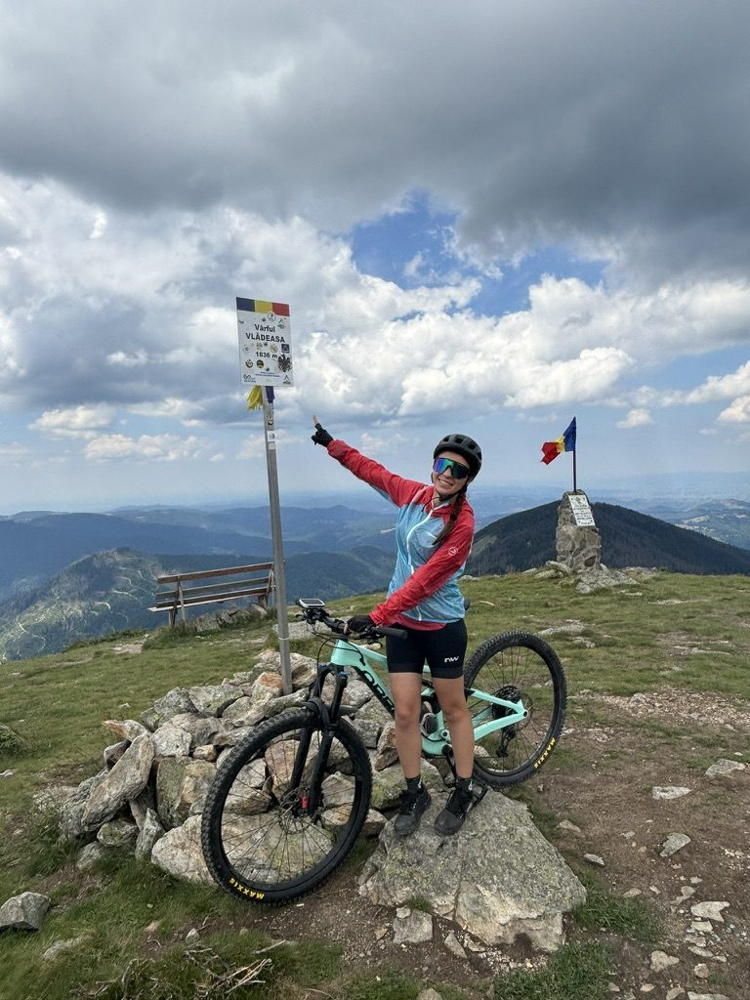

Vârful Vlădeasa is 1,835 metres. It sits in the Apuseni Mountains west of Cluj, and it is entirely possible to climb it on a mountain bike. Not easy — but possible. The kind of possible that requires you to commit before you fully understand what you've committed to.
The climb is long and at times brutal. The Apuseni are not the dramatic sharp peaks of the Carpathians — they're older, more rounded, with wide open ridgelines and a sense of space that hits you once you're above the treeline. On a bike, this means sustained effort. No technical rock garden forcing you to slow down and think. Just you, the gradient, and the question of how much you have left.
I was on the Orbea. Mint green, full suspension, the bike that has become inseparable from any ride I take seriously. It handles the climb differently from a hardtail — the rear suspension absorbs the rough sections but costs you a little efficiency on the long fireroad pitches. You learn to compromise.
The summit

Vârful Vlădeasa, 1,835m. The sign, the bike, the Romanian flag.
When you arrive at the top, there is a summit marker with the name and altitude and a Romanian flag. Standard mountain summit furniture. But after a climb of several hours on a bike, it carries more weight than it would on foot. You read it differently.
I pointed at it for the photo because that's what you do when you've earned something. You point at the evidence.

The Orbea gets lifted. It earned this too.
The second photo says something I can't say in words quite as well. You lift your bike above your head at a summit because the bike did it with you. The Orbea is not equipment I use. It's more like a partnership. It goes where I ask it to go, and when we arrive somewhere hard to reach, it seems right to acknowledge that together.
The route
The standard approach to Vlădeasa by bike starts from the Răchițele area and follows forest roads and trails to the ridge, then continues to the summit. Total elevation gain is significant — plan for a full day. The descent is the reward: long, flowing, with views across the Apuseni that make you slow down involuntarily just to look.
Strava route below — click to see the full map and elevation profile:
Full route on Strava — including elevation and waypoints.
Group vs solo

Another summit, another group. Finișel — same energy, different mountain.
I've done this kind of climb both with a group and alone. They are genuinely different experiences. With a group, the suffering has company — someone to complain to, someone who pulls you through the last section when your legs are done. Alone, the only voice is your own, which means you either convince yourself to keep going or you don't.
Both are worth doing. The solo version teaches you something about your own negotiating tactics with yourself. The group version teaches you that other people's energy is one of the best performance-enhancing substances available.